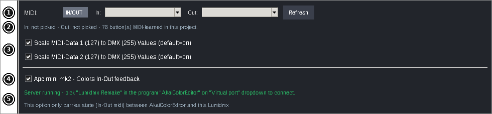

For: FullPlayer
The MIDI tab of Setup & Patch connects a MIDI controller - pads, faders, a keyboard - so that its controls start the buttons of the Live panel and move its sliders. The ports and the options are settings of the program; which control does what is kept in the project, with each button.

The MIDI tab with Andrei_edit.x1 open: no port picked, 78 buttons that have a MIDI control.
| 1 | In and Out - the MIDI ports. In: where the controls come from. Out: where the program answers - the lights of the pads, for a controller that shows the state of the buttons. Refresh reads the list of ports again (after a controller was plugged in). |
| 2 | The state - the ports picked, and how many buttons of the project have a MIDI control (MIDI-learned). It turns green while the In port works. |
| 3 | Scale MIDI-Data 1 / 2 (127) to DMX (255) (below). |
| 4 | Apc mini mk2 - Colors In-Out feedback (below). |
| 5 | Its state - whether its link is running. |
Pick the In port first (or use the APC mini mk2 link, below). Then, in the Live-Object Propertys of the button, click into the field under MIDI and press - or move - the control on the controller: the field shows it and MIDI is ticked. See Remote, controllers and MIDI.
A MIDI message carries two numbers after its kind: Data 1 (which note or control) and Data 2 (how hard, or where the fader is). Both go from 0 to 127, while DMX goes from 0 to 255. The projects keep the MIDI of their buttons in the DMX range, so with these boxes ticked (as at first) the numbers received are scaled up to it (127 becomes 255) before they are compared, and scaled back down for what is sent to the controller. Leave both ticked, unless a project's MIDI was learned with them off.
For the AKAI APC mini mk2: the colours of its pads follow the state of the buttons (running, stopped, a group, a
function), as set in its own editor. Ticked (as at first), the program starts a link for the controller and opens the
Apc Mini Mk2 - Colors / Grups / Function - Editor window; at the start of the program the editor waits in the
tray. In the editor, pick Lumidmx Remake in the Virtual port list to connect. The
colours are kept in Default Project.json, next to the program.
Important: the link and the In / Out ports above cannot work together. Ticking the box clears the ports; picking a port while the link runs turns the box off, with a message.